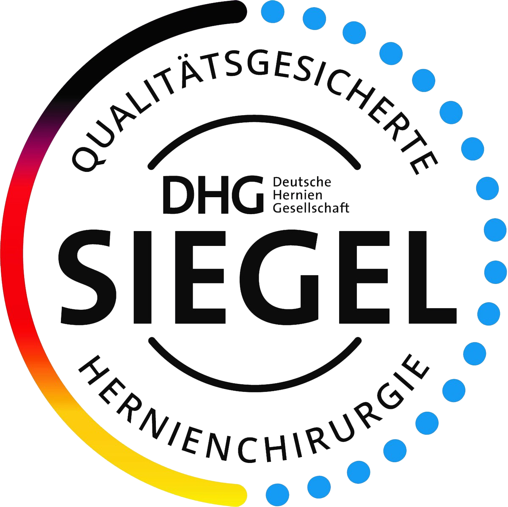
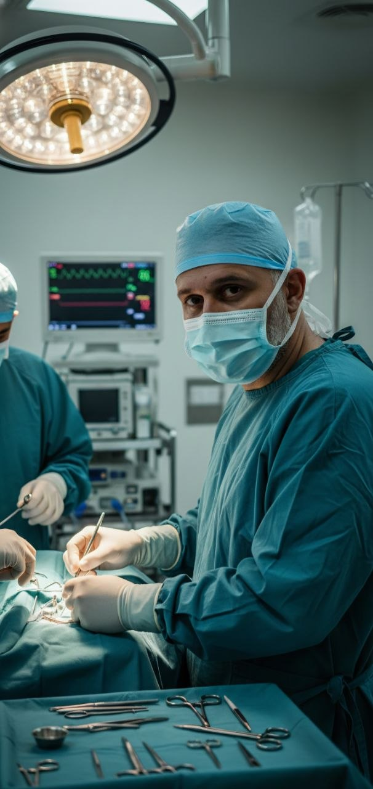
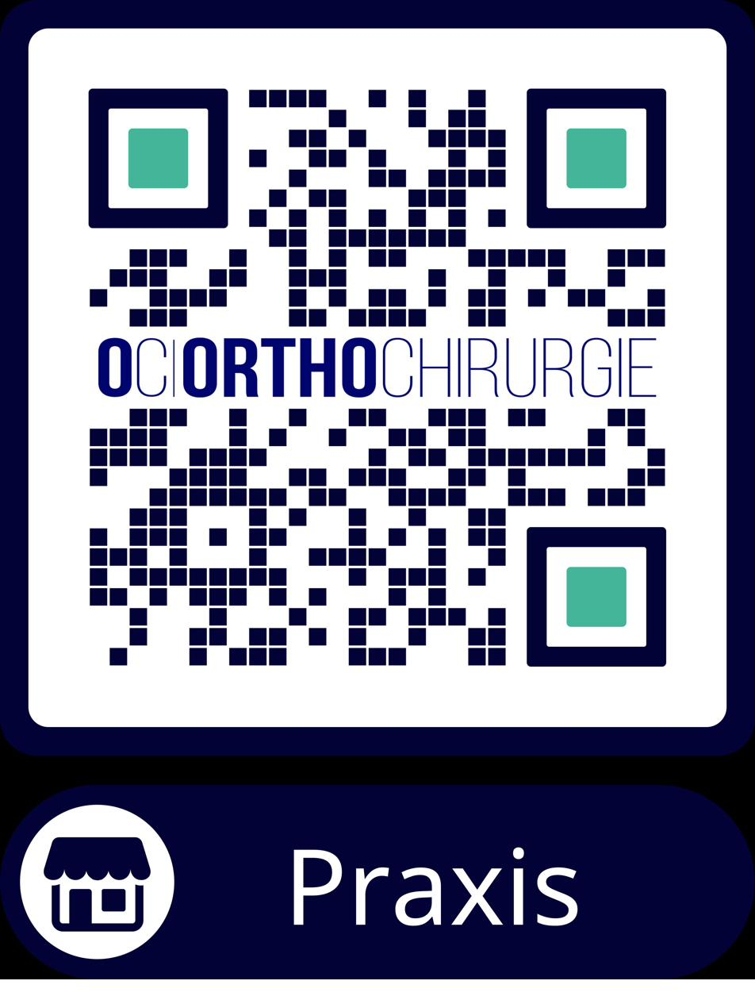

Praxis
Standort Ludwigshafen
Berthold-Schwarz-Str. 26
67063 Ludwigshafen-Friesenheim
Stellen Sie Ihre Frage – unser Assistent hilft Ihnen dabei.
Diese Anzeichen deuten auf einen medizinischen Notfall hin:
→ Suchen Sie in diesem Fall umgehend die nächste Notaufnahme auf.


Facharzt für Allgemein- und Viszeralchirurgie
Als zertifizierter Hernienoperateur und Mitglied der Deutschen Herniengesellschaft (DHG) habe ich mich auf die operative Behandlung sämtlicher Hernienformen spezialisiert. In unserem zertifizierten Hernienzentrum verbinden wir modernste minimal-invasive Operationstechniken mit individueller Patientenversorgung.
Schwerpunkte meiner Tätigkeit liegen in der laparo/endoskopischen Hernienchirurgie (TEP, TAPP, eTEP, E-MILOS, Lap IPOM), in der Versorgung komplexer Narben- und Rezidivhernien sowie in nervenerhaltenden Operationstechniken zur Vermeidung chronischer Schmerzen.
Hernien können an verschiedenen Stellen der Bauchwand auftreten. Hier finden Sie eine Übersicht der häufigsten und seltensten Formen.
Übersichtlich nach Themen geordnet – auf der Basis aktueller Leitlinien und langjähriger klinischer Erfahrung.
Wir sind für Sie an zwei Praxisstandorten und in unseren Operationskliniken erreichbar.
Berthold-Schwarz-Str. 26
67063 Ludwigshafen-Friesenheim
Oggersheimer Straße 42
67112 Mutterstadt
Ludwigshafen am Rhein
Ambulante Hernienchirurgie
68723 Schwetzingen
Ambulante & stationäre Hernienchirurgie
Für nicht dringliche Anfragen, Befundübermittlung oder Rückfragen erreichen Sie uns am einfachsten per E-Mail.
Vereinbaren Sie bequem online einen Wunschtermin bei Dr. med. Tarek Osman – rund um die Uhr verfügbar.

Scannen Sie den QR-Code, um zu unseren Praxisinformationen, Online-Terminen und Wegbeschreibung zu gelangen.
Alle Materialien zum Herunterladen. Sie können sie bequem zu Hause ausdrucken und ausfüllen.
Verständlich erklärt: Ursachen, Symptome, Behandlung.
Überörtliche Berufsausübungsgemeinschaft für Chirurgie und Orthopädie (Gemeinschaftspraxis) in der Rechtsform der Gesellschaft bürgerlichen Rechts (GbR)
Solange Jöhnk, Irfan Halaceli, Dr. med. Tarek Osman und Dr. med. Jan-Henrik Dieckmann
Berthold-Schwarz-Str. 26, 67063 Ludwigshafen
Tel.: 0621 53399050 (LU) | 06234 9288500 (MU)
E-Mail: info@oc-orthochirurgie.com
Kassenärztliche Vereinigung Rheinland-Pfalz
Isaac-Fulda-Allee 14
55124 Mainz
Bei einem Leistenbruch drücken sich Eingeweide, wie zum Beispiel der Dünndarm, durch eine natürliche Schwachstelle der Bauchwand direkt in den Leistenkanal.
Es gibt nicht die eine Ursache; oft spielen verschiedene Risikofaktoren zusammen:
In der modernen Bruchchirurgie wird jeder Patient individuell versorgt. Die Wahl des Verfahrens hängt von der Größe und Form des Bruches sowie den Ansprüchen des Patienten ab. Dabei orientieren wir uns in der OC | OrthoChirurgie an den Leitlinien der europäischen Herniengesellschaft.
Es stehen grundsätzlich zwei Wege zur Verfügung:
Nicht jeder Bruch muss mit einem Netz verstärkt werden. Bei einer offenen Operation (ca. 5–7 cm langer Schnitt) wird der Bruchsack in die Bauchhöhle zurückgebracht. Die Bruchlücke wird plastisch mit dem eigenen Gewebe des Patienten gedeckt.
Hier wird die Schwachstelle zusätzlich durch ein spezielles Kunststoffnetz stabilisiert.
Bei einem Bruch (Hernie) drücken sich Eingeweide, beispielsweise der Dünndarm, durch eine Schwachstelle der Bauchwand nach außen. Im Falle einer Nabelhernie befindet sich diese Schwachstelle im Bereich des Nabels. Oft bildet sich dabei eine von außen sicht- und tastbare Vorwölbung.
Ein Bruch kann verschiedene Ursachen haben und durch zahlreiche Risikofaktoren gefördert werden:
In der modernen Bruchchirurgie wird jeder Patient individuell versorgt. Die Wahl des Verfahrens hängt von der Größe und Form des Bruches sowie den Ansprüchen des Patienten ab. Dabei orientieren wir uns in der OC | OrthoChirurgie an den Leitlinien der europäischen Herniengesellschaft.
Es stehen grundsätzlich zwei Wege zur Verfügung:
Eine Narbenhernie ist ein Bruch, der im Bereich einer früheren Operationsnarbe auftritt. Dabei drücken sich Eingeweide durch die dort entstandene Schwachstelle der Bauchwand. Es kann eine Vorwölbung entstehen, die von außen sichtbar und tastbar ist.
Die Entstehung wird durch eine Kombination aus lokaler Schwäche und innerem Druck begünstigt:
Die Entscheidung über eine Operation wird für jeden Patienten individuell getroffen. Wir orientieren uns in der OC | OrthoChirurgie an den Leitlinien der europäischen Herniengesellschaft. In der Regel muss eine Narbenhernie mittels Netzes versorgt werden. Eine Versorgung mittels Direktnaht ist oft mit einem sehr hohen Rezidivrisiko verbunden.
Das Verfahren wird passgenau nach Form und Größe des Bruches ausgewählt:
Berichte aus regionalen und überregionalen Medien über die Zertifizierung als Kompetenzzentrum für Hernienchirurgie und moderne minimalinvasive Operationsverfahren.